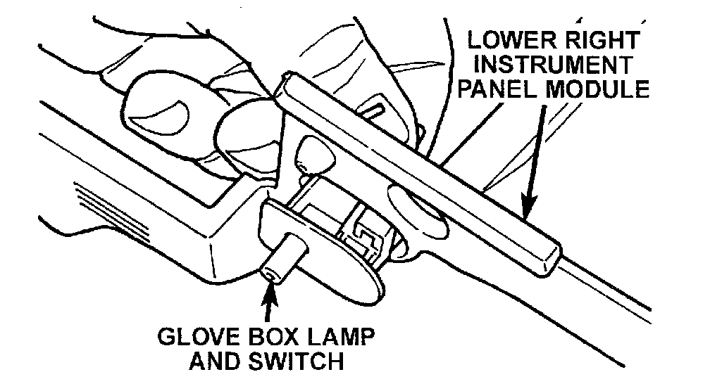

Glove Box Lamp and Switch
GLOVE BOX LAMP AND SWITCHWARNING: ON VEHICLES EQUIPPED WITH AIRBAGS, REFER TO PASSIVE RESTRAINT SYSTEMS BEFORE ATTEMPTING STEERING WHEEL, STEERING COLUMN, OR INSTRUMENT PANEL COMPONENT DIAGNOSIS OR SERVICE. FAILURE TO TAKE THE PROPER PRECAUTIONS COULD RESULT IN ACCIDENTAL AIRBAG DEPLOYMENT AND POSSIBLE PERSONAL INJURY.
(1) Remove the lower right instrument panel module as described.
Glove Box Lamp And Switch Remove/Install:

(2) From the back side of the lower right instrument panel module, squeeze the retaining tabs on the glove box lamp and switch housing together and push the unit out through the front of the mounting hole in the module.
(3) To install the glove box lamp and switch unit, insert the unit through the mounting hole from the front of the lower right instrument panel module and push in on the unit firmly until the retaining tabs snap into place.